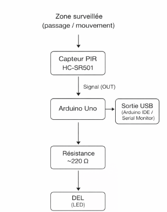
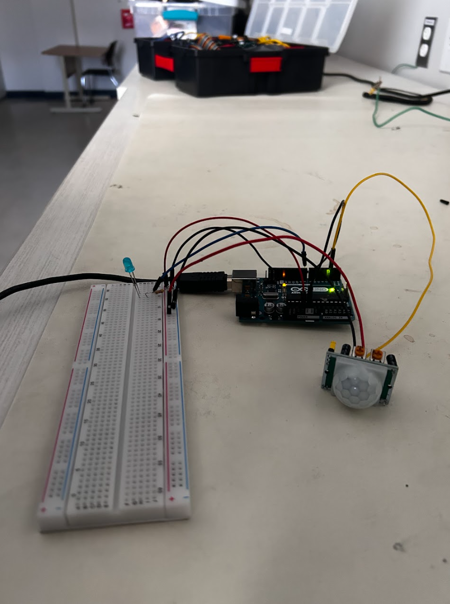

Rapport de laboratoire
Rapport – Capteur de mouvement HC-SR501 PIR
Page HTML/CSS simple (fond noir/gris) avec navigation par sections
Usage proposé
Pour plusieurs scénarios dans notre monde actuel, la sécurité est l'un des enjeux les plus importants. Malgré les milliers d'innovations technologiques, le capteur de mouvement demeure l'une des inventions les plus utilisées aujourd'hui. En effet, ce type de dispositif est présent dans des contextes commerciaux (portes automatiques, éclairage, etc.) ainsi que dans des contextes liés à la sécurité (caméras, systèmes d'alarme, automobiles, etc)
C'est pour ces raisons que j'ai choisi d'utiliser le capteur de mouvement HC-SR501 PIR.
Description de l'objet expérimenté
Ce détecteur de mouvement me permettra de concevoir un système de détection de mouvement autonome à l'aide d'un microcontrôleur (Arduino Uno), destiné à surveiller le passage de personnes dans une zone précise. En d'autres mots lorsqu'un mouvement est détecté par le capteur, l'information est traitée et peut être affichée en temps réel sur le système local de Arduino tout en déclenchant une action un signal lumineux.
Dans ce laboratoire, nous expérimenterons avec le capteur de mouvement HC-SR501 PIR, un composant électronique utilisé pour détecter la présence ou le déplacement d'une personne (mouvement). Le capteur est relié à une carte Arduino Uno, un microcontrôleur à faible coût conçu pour le prototypage et l'apprentissage de l'électronique.
L'Arduino Uno permet de lire les données du capteur et de déclencher des actions simples, comme l'allumage d'une lumière (DEL) ou l'affichage d'une information. Pour notre part, le montage utilise aussi une breadboard, des fils de connexion et une résistance, ce qui permet de concevoir un système fonctionnel sans infrastructure complexe ni coûteuse.
Ce projet vise à démontrer comment un matériel léger et accessible peut être utilisé pour créer un système de détection de mouvement fiable, applicable à des contextes simples comme la surveillance d'un accès ou l'activation automatique d'un dispositif.
Le développement et la programmation du système sont réalisés à l'aide de l'environnement Arduino IDE, un logiciel open-source fourni par Arduino.
Schématisation matérielle
(Schéma à insérer)
 Expérimentations
Les expérimentations visent à évaluer si le capteur de mouvement HC-SR501 PIR offre une détection fiable pour une utilisation simple de surveillance (détection d'une présence et déclenchement d'un signal lumineux).
1. Détection du mouvementObjectif : Vérifier que le capteur détecte correctement un mouvement et déclenche l'action prévue
(lumière bleu DEL).
Matériel requis :
- Arduino Uno
- Capteur HC-SR501 PIR
- Breadboard
- DEL + résistance (≈ 220 Ω)
- Fils de connexion (jumpers)
- Câble USB + ordinateur (Arduino IDE / Serial Monitor)
Objectif : Mesurer le temps nécessaire avant que le capteur puisse détecter un nouveau mouvement après
une détection (fréquence à laquelle la DEL peut s'éteindre puis se rallumer).
Matériel requis :
- Même matériel que l'expérimentation 1
- Chronomètre (téléphone)
Objectif : Déterminer l'angle maximal dans lequel un mouvement peut être détecté de manière fiable par le
capteur.
Matériel requis :
- Même matériel que l'expérimentation 1
Avis
Justification du potentiel de la techno (partie importante)
Est-ce que les expérimentations ont été concluantes ?Oui, à l'encontre de mes doutes, le capteur a démontré une excellente capacité à détecter un mouvement dans une zone définie, à déclencher une lumière (DEL) et à fonctionner de manière stable. Les tests de détection, de redétections et d'angle de détection montrent que cette technologie répond adéquatement aux objectifs visés pour un système de détection plutôt simple.
Dans quel cas la techno est-elle pertinente à utiliser ? Pourquoi ?Cette technologie est particulièrement pertinente dans des contextes où le but principal est de détecter une présence ou un passage, sans nécessairement devoir faire une authentification (code, etc). Elle est bien adaptée pour des cas tel que la surveillance d'un petit environnement, l'activation automatique d'un éclairage (lumière, veilleuse), des systèmes d'alarme de base ou des projets pédagogiques. E effet, son faible coût, sa simplicité et sa faible consommation énergétique en font un outil efficace lorsque les contraintes budgétaires ou techniques sont importantes.
Dans quel cas n'est-elle pas pertinente à être utiliser ? Pourquoi ?Pour des situations nécessitant une détection précise et continue, comme l'identification d'individus, la mesure de vitesse ou la reconnaissance vocale, cette technologique n'est pas du tout adapté. La technologie fonctionne selon une logique binaire (mouvement détecté ou non) et ne permet pas de différencier les personnes, d'analyser finement leur comportement, etc. De plus, sa performance peut être affectée par la température ambiante. Par exemple, ce n'est pas l'idéal dans les endroits qui bougent trop, parce qu'il bug dès qu'il sent une source de chaleur comme un chauffage ou un animal domestique.
Peut-elle s'intégrer avec d'autres techno afin de pallier ses faiblesses ?Le potentiel de cette technologie augmente considérablement lorsqu'elle est intégrée à d'autres systèmes. Par exemple, le capteur PIR peut servir de déclencheur à une caméra associée à un algorithme de reconnaissance de formes (comme OpenCV). Le capteur peut maintenant détecter un truc louche, sonner l'alerte, ouvrir la caméra et alors vérifier s'il s'agit bien d'un humain et non d'un chat ou un rideau qui bouge.
Longévité
Franchement, le HC-SR501, c'est un module ultra fiable pour de la détection de mouvement sur le long terme. Il n'a aucune pièce mécanique mobile, donc il n'y a pratiquement rien qui s'use par frottement ou qui risque de casser juste avec le temps.
Il est capable d'aller à une température allant d'environ -15/ 20 °C jusqu'à +70/+80 °C selon les fiches techniques et vendeurs (voir sources), ce qui couvre largement la plupart des montages extérieurs. Sa consommation au repos est très faible : on parle d'un courant moyen de repos inférieur à 55 µA pour le module, ce qui permet de l'alimenter avec une batterie pendant longtemps.
Si tu le mets dans un boîtier ou sous un abri qui le protège un peu du soleil, de la pluie et de la condensation, c'est ce genre d'installation que tu installes une fois et que tu peux ensuite le laisser tourner des années sans quasiment jamais y revenir.
Stabilité
Pour être franc, il excelle dans les environnements variables, supportant des températures extrêmes de -20°C à +80°C sans perte de performance. Même après plusieurs cycles thermiques, typiques des hivers québécois, il est toujours à son meilleur. Par exemple, exposé à des variations d'humidité (dans un boîtier protégé), il ne manifeste aucune instabilité, contrairement à des modules plus complexes qui dégrade avec le temps. (exemple!)
Efficacité
À seulement 2-3$ pièce, il offre une couverture optimale d'environ 7 mètres et 110° d'angle, déclenchant instantanément tes setups d'automatisations (pour lumières, alarmes ou matériel DJ). Sa consommation d'énergie inférieure à 50 µA permet une autonomie exceptionnelle sur batterie (des mois sur une pile AA), surpassant largement les capteurs "smart" Bluetooth ou WiFi qui vident les accus en semaines.
Toutefois, étant basé sur la chaleur (PIR), il peut être perturbé par des sources de chaleur soudaines (radiateurs, rayons de soleil directs). Aussi, si quelqu'un bouge trop lentement, le capteur peut voir cela comme une variation naturelle de la température ambiante. À l'inverse, un passage très rapide peut ne pas laisser assez de temps au circuit pour analyser le signal avant que la personne ne soit déjà sortie du champ.
Maintenabilité
Avec son design sans pièces mobiles ni firmware à mettre à jour, c'est parti pour des années sans intervention dans un simple boîtier contre la pluie et la neige. Pas de surchauffe (grâce à sa faible consommation) et une robustesse aux vibrations modérées qui évite les pannes mécaniques. Par contre, sa sensibilité aux fausses alertes (insectes, vibrations fortes ou changements brusques de température en extérieur non abrité) peut nécessiter une intégration avec d'autre matériel technologique, augmentant légèrement le temps initial d'installation. Malgré ça, son rapport fiabilité/prix reste imbattable pour du long terme.
Avantages et inconvénients de la techno (partie importante)
Le capteur PIR HC-SR501 est un simple objet technologique peu couteux et facile à trouver. Pour des petit projet et expérience débutante, c'est l'idéal. On y retrouve un câblage extrêmement simple : trois broches seulement. Ce qui offre un montage plutôt simple. Cet outil propose aussi un ajustement au niveau de la sensibilité et du temps de retard, permettant une personnalisation unique. En ce qui concerne sa faible consommation d'énergie, une batterie te suffit pour alimenter ce capteur pour plusieurs jours.
Toutefois, tout objet à leurs limites. En effet, le HC-SR501 ne peut pas détecter les personnes ou les objets qui ne bougent pas. Même s'il peut atteindre des températures extrêmes (voir plus haut), une mauvaise protection, surtout dans des milieux extérieurs, peut provoquer des déclenchements intempestifs. Finalement, malgré ses avantages, il ne peut malheureusement pas détecter les mouvements à travers le verre, les objets solides et les murs.
Comparaison aux autres solutions
On pourrait envisager d'utiliser plutôt un autre capteur de mouvement comme le AM312. Par contre, on réaliserait qu'il est un peu moins avantageux que le capteur HC-SR501 : portée fixe et plus courte (2 à 3 mètres), angle de détection plus petit, plage de tension beaucoup plus étroite (3V à 5V). Par contre, il est plus petit de taille et à une consommation d'énergie vraiment plus faible, ce qui lui permettrait d'avoir une autonomie sur batterie nettement supérieure.
On pourrait aussi envisager d'utiliser plutôt un module comme le HC-SR505. Cependant, on s'apercevrait qu'il est légèrement moins performant que le HC-SR501 : portée fixe et plus courte (~3 m), angle de vision un peu plus étroit (<100° fixe), et aucun réglage possible (sensibilité ou délai). En contrepartie, sa taille ultra-compacte (~10 mm lentille) et sa consommation très basse (<60 µA) lui offrent une autonomie sur batterie nettement supérieure.
Si l'on regarde plus loin, on aurait aussi un module mmWave radar comme le SeeedStudio 24GHz Human Static Presence, qui est nettement meilleur du HC-SR501 pour des usages avancés : détection de présences statiques (respiration, immobilité), passe à travers les non-métaux et reste insensible aux insectes ou aux variations thermiques. Sa portée s'étend jusqu'à 12 m avec une précision de 95 % grâce à ses algorithmes intégrés. En contrepartie, ce capteur à ses défauts : prix élevé (28$ comparativement à 2-3$) et une consommation d'énergie plus intense (20-50mA vs 60µA), le rendent moins accessible pour des projets simples.
Conclusion
Selon mes expériences avec le capteur HC-SR501, je trouve qu'il à été totalement à la hauteur de mes attentes. C'est un petit module hyper efficace qui prouve qu'on n'a pas besoin de trucs ultra complexes pour obtenir des résultats solides.
Mes recherches m'ont confirmé que ce petit objet apporte une vraie liberté dans les projets faciles et innovants. C'est un matériel léger, pas cher et parfait pour des usages simples où on veut une détection fiable sans se prendre la tête avec des systèmes hors de prix.